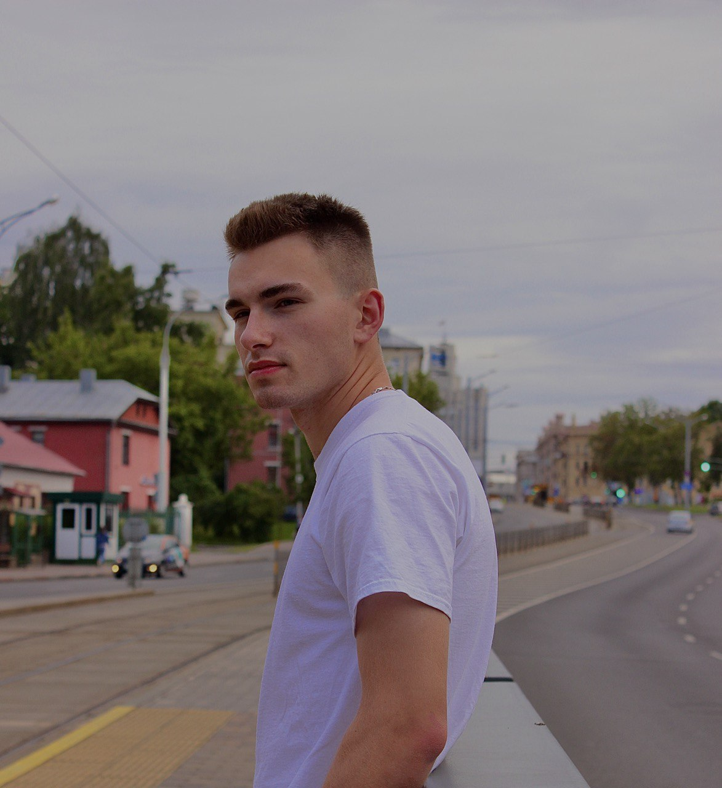
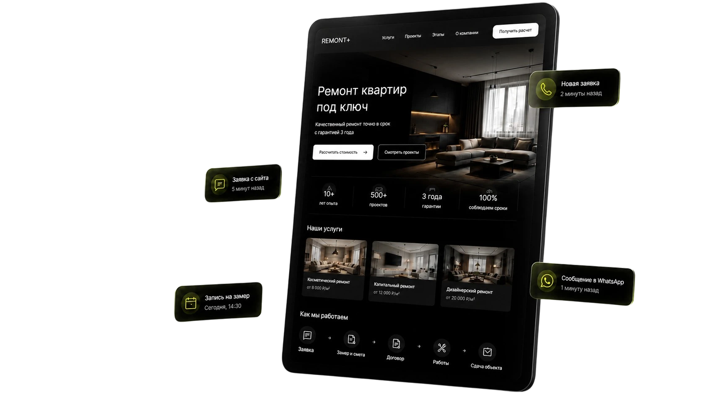
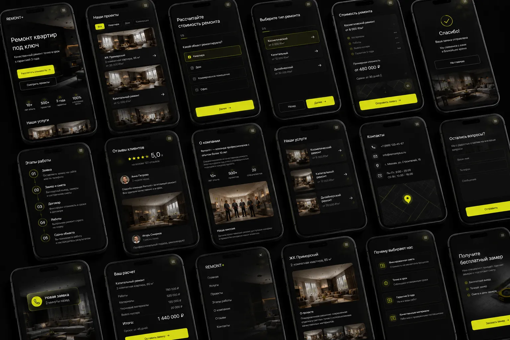

Отделка и ремонт квартир «под ключ»
Убрали стоковые фото, добавили калькулятор и квиз. Конверсия выросла с 0.8% до 3.1%.
PageSpeed до
57
PageSpeed после
87+

Max Labiak

Делаю сайты с 2018 года
Превращает трафик из Директа и Авито в заявки на замеробратный звонокWhatsAppрасчёт стоимости
Экспресс-аудит скорости и ошибок за 2 мин
Шесть причин, которые встречаются почти на каждом сайте ремонтной компании. Каждая из них режет конверсию.
Нет предварительного расчёта
Человек не понимает порядок цен и уходит к конкурентам.
Форма просит телефон сразу
Оставлять контакт до того, как что-то узнал, никто не хочет.
Фото со стоков вместо объектов
Одинаковые картинки не доказывают, что вы вообще делали ремонт.
Ни слова про смету и договор
Клиент боится скрытых платежей и срыва сроков, а на сайте нет никаких гарантий.
Некому ответить на вопрос
Пока вы отвечаете, клиент уже пишет трём вашим конкурентам.
Грузится шесть секунд
На телефоне вёрстка разъезжается — половина уходит, не дочитав.
Эти инструменты подбираются индивидуально под вашу нишу и помогают получать больше заявок с того же объёма трафика
Убрали стоковые фото, добавили калькулятор и квиз. Конверсия выросла с 0.8% до 3.1%.
PageSpeed до
57
PageSpeed после
87+

Сделали акцент на реальных объектах и видео. Средний чек вырос на 40%.
PageSpeed до
44
PageSpeed после
91+

Новый сайт с нуля за 5 дней. 12 заявок в первую неделю после запуска рекламы.
PageSpeed до
—
PageSpeed после
89+
Синий градиент, стоковые строители, «качественно и в срок».
Это можно использовать.
★★★★★
«За первую неделю получили 8 заявок из Директа. Раньше с того же бюджета — 1–2 в месяц. Максим сделал всё быстро и объяснил, что изменилось.»
Игорь Стрельников
РемСтройМастер
★★★★★
«Работали без переписки через менеджера. Прислал фото утром — к вечеру уже был первый экран. Правки принял сразу, без споров. Рекомендую.»
Анна Власова
Уютный Ремонт
★★★★★
«Калькулятор закрыл главный вопрос — людям больше не надо звонить, чтобы узнать порядок цен. Заявки стали приходить уже с понятным бюджетом.»
Дмитрий Кузнецов
Мастер Отделки
★★★★★
«Старый сайт грузился вечность и на телефоне разъезжался. Сейчас открывается мгновенно, реклама наконец окупается.»
Сергей Панов
ДомСтрой
★★★★★
«Отдельное спасибо за блок с гарантиями и договором. Клиенты перестали спрашивать про скрытые платежи — всё написано на сайте.»
Марина Лебедева
Интерьер Плюс
Бриф
20 минут
Созваниваемся или заполняем короткую анкету, фиксируем задачи и ЦА.
Первый экран
2-й день
Показываю концепт и главный оффер — вы сразу видите стиль будущего сайта.
Сборка
2–4 дня
Верстаю все блоки, подключаю калькуляторы, квизы и адаптив под мобилки.
Тестирование
1–2 дня
Проверяем работу форм, скорость загрузки и вносим необходимые правки.
Запуск
1 день
Переносим сайт на ваш домен, настраиваем аналитику и передаём все доступы.
От вас — фото объектов, прайс, реквизиты. Срок идёт с момента, когда всё получено.
Я Макс. Уже 3 года специализируюсь только на сайтах для ремонтных компаний.
Перед разработкой изучаю конкурентов, разбираюсь, как ваши клиенты принимают решение, и проектирую сайт так, чтобы он помогал рекламе приносить заявки, а не просто занимал место в интернете.
8 лет
опыта разработки сайтов, сейчас — под нишу ремонта
x2–x3
рост окупаемости рекламы у клиентов
3.5%
средняя конверсия разработанных сайтов
5 дней
от брифинга до готового сайта на домене
Лендинг Start
Для небольших команд и первого запуска рекламы
45 000 ₽
Лендинг Plus
Полноценный сайт для привлечения и обработки заявок
85 000 ₽
Корпоративный сайт
Для компаний с большим портфолио и несколькими услугами
От 150 000 ₽
Гарантия: если визуальное направление после первого экрана не подойдёт, верну предоплату полностью.
4 вопроса — покажу рекомендацию и цену сразу на экране.
Это не проблема. Я помогу со структурой сайта, подготовлю тексты с помощью AI и подскажу, какие фотографии лучше использовать.
После запуска проекта я буду помогать с заменой контента, исправлять возможные технические недочёты и отвечать на все ваши вопросы.
После запуска вы всегда сможете обратиться ко мне. Я помогу обновить тексты, фотографии, цены или внести другие изменения. При необходимости можно подключить ежемесячную поддержку.
В зависимости от выбранного тарифа заявки могут приходить в Telegram, на электронную почту или автоматически передаваться в CRM.
Работа начинается с разработки первого экрана. Если предложенное направление не подойдёт, я внесу правки или верну предоплату согласно условиям гарантии.
После заявки мы обсуждаем ваш бизнес, определяем задачи и подходящий тариф. Затем я приступаю к разработке первого экрана и согласовываю визуальное направление перед дальнейшей работой.
Не нашли ответ на свой вопрос?
Напишите мне напрямую, отвечу за 15 минут.
Оставьте контакт — отвечу в течение часа.